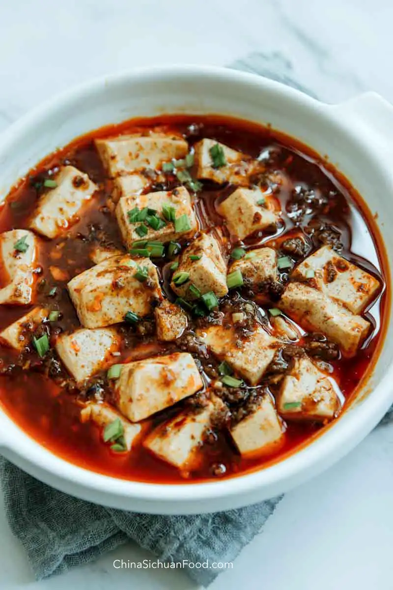

Mapo Tofu Recipe

Description:
Mapo tofu is one of my favorite dishes. My bf makes really
good mapo tofu and you should eat it too.
Ingredients:
- soft to medium tofu
- ground meat (optional)
- chicken broth
- broad bean paste
- garlic
- ginger
- ground seasoning:
- Cardemom
- Clove
- Coriander
- Cumin
Steps:
- Grind up your seasonings
- heat up oil in a wok and cook the meat
- add ginger, garlic, and seasonings to wok and cook until well incorporated
- add the rest of ingredients
- eat it yummy yummy